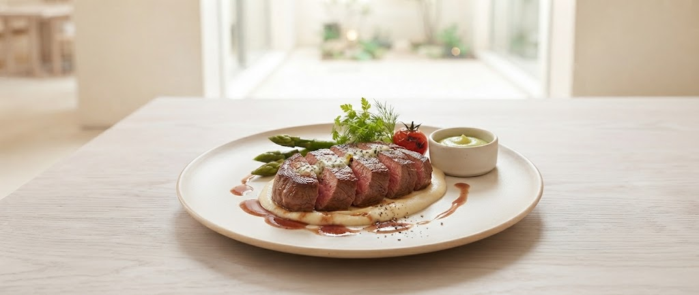

Concept
フランスと札幌で12年。当たり前のことを徹底的に追求する。
北海道の力強い食材に、伝統のソースを添えて。
高級食材を身近に、そしてカジュアルに楽しんでいただきたい。
それが、ラ・フランス亭の想いです。

Signature Dish
数日かけて仕込む特製ソース。肉の繊維一本一本に絡みつく、芳醇な香りと旨み。 シェフが最も自信を持って提供する、当店のアイデンティティとも言える一皿です。
New Plans
お客様の声にお応えし、準備を進めている新しい取り組みです。
北海道産の厳選素材を一皿に少しずつ。色とりどりのテクスチャーとシェフ特製ソースが奏でる、欲張りな前菜コースをご用意中。
大切な日の食卓をレストランに変える特製デリバリー、テイクアウトBOX。お店の味覚をそのままご家庭にお届けします。
Comfortable
普段着で、バンドTシャツで。ありのままのあなたでお越しください。 私たちが提供するのは、形式ではなく「食事の愉しみ」です。
マナーがわからなくても大丈夫です。ホールのスタッフが、 お料理を一番美味しく召し上がる方法をそっとお教えいたします。
フォアグラやトリュフも、より多くの方に。 ランチから本格的なコースまで、手に届く贅沢をお約束します。
地下鉄駅から徒歩圏内、お車でのアクセスもスムーズ。 都会の喧騒を忘れる、洗練された空間でお待ちしております。
Voice
「ど緊張してたらホールの方がすぐ教えてくれるし和ませてくれた。最後は楽しめました！味も最高です。」
— 初フレンチのお客様
「バンドTシャツでフレンチというミスマッチが面白かった。当日予約にも快く対応してくれた。」
— 音楽好きのお客様
「基礎もしっかりしているし、とても美味しい料理。スタッフ問題も改善してくれると期待です。」
— 常連のお客様